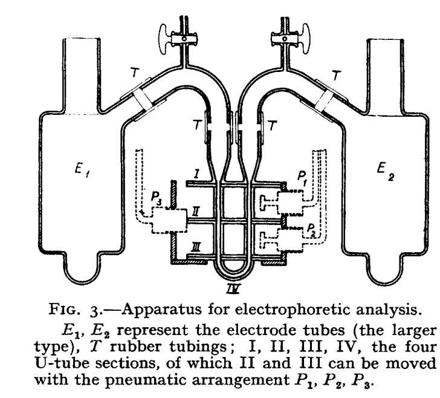
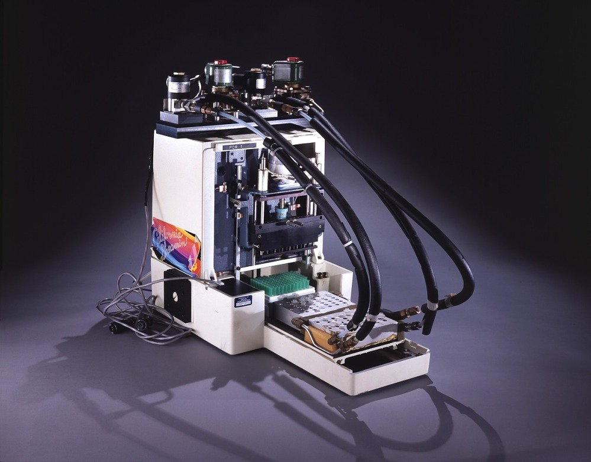
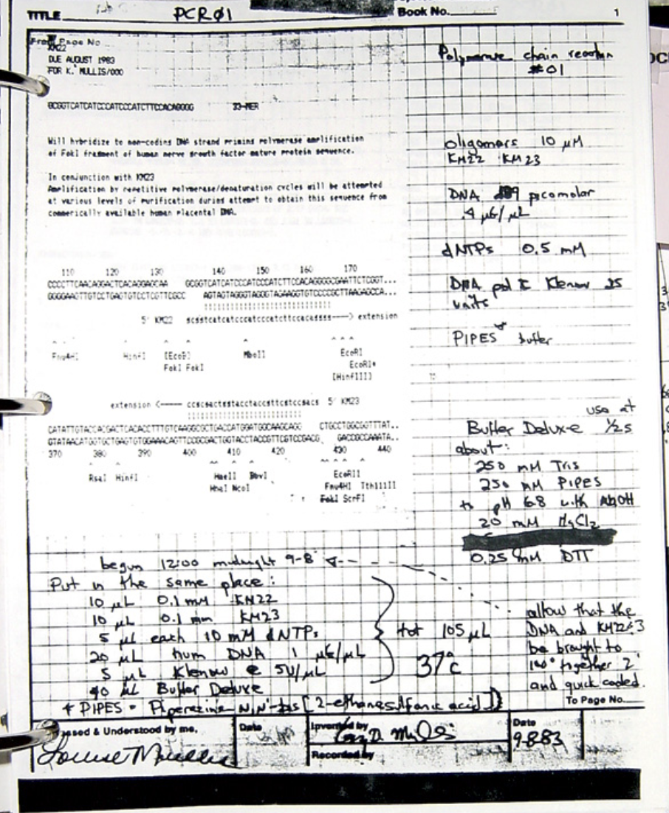

The aim of this post is to understand the process and style of thinking that led scientists to discover electrophoresis, PCR, and Sanger sequencing. I decided not to explain these techniques, so this post might get confusing at times if you are unfamiliar with them.
What is the pattern of thinking that leads people to great discoveries? For instance, were the critical tools we use today in biology—such as sequencing or mass spectrometry—simply like an apple falling on Newton's head? Could you have developed these tools yourself? What system or mindset does it take? Do discoveries only occur when all prerequisites are in place, or do scientists plan and check off requirements one by one? I explored these questions by examining the history of molecular biology pillars: PCR, sequencing, and electrophoresis.
The most straightforward way to trace this cross-generational reasoning is by creating a timeline of discoveries and their essential components. But this is more than a history of techniques. It's about how small, often forgotten findings can spark entire lines of research, how a single peculiar bacterium can enable automation, and how inventions sometimes precede the discoveries that fully realize their potential.
Electrophoresis - 1931
Timeline
- 1791 - Faraday presents the laws of electrolysis
- 1800 - Voltaic pile was invented. For the first time, a steady electric current can be provided
- 1801 - Gautherot first notes the phenomena of electrophoresis (particles moved by electricity) in "Memoire Sur in galvanisme" (p. 203-210)
- 1807 - Ferdinand Friedrich Reuss observes electroosmosis (substance moved by electricity), publishes observations in 1809
- 1860 - method of optical detection of moving boundaries (August Toepler) - widely used to study supersonic motion
- 1930 - Arne Tiselius publishes his dissertation "The moving boundary method of studying electrophoresis of proteins."
- 1937 - First electrophoretic machine created by Arne Tiselius and described in "A New Apparatus for Electrophoretic Analysis of Colloidal Mixtures" (moving boundary electrophoresis, not capable of fully separating mixtures as it was free of supporting media). Tiselius later won the Noble Prize for the electrophoretic machine.
- 1950 - Kunkel, after spending a year in Tiselius' lab, started investigating a variety of electrophoretic media and discovered that washed starch grains allow for more sharp separation
- 1955 - While studying insulin, Oliver Smithies modifies the starch approach to create gel as a new medium for electrophoresis. Although a minor insight, this was the step that enabled a more reliable separation of macromolecules
Components and foundations (physical and conceptual)

Gel electrophoresis is a technique used to separate and analyze particles based on their size and charge. During this process, an analytical medium is poured onto a gel, and an electric field is applied. Molecules in the mixture, each with different weights, move at varying speeds when subjected to the electric field, forming streaks that correspond to molecular weights. For the separation process, electrodes, a medium (gel), and a buffer are required in the electrophoresis apparatus. Conceptually, this method is governed by the principles of electrolysis.
Problem-Solving Approach
When Tiselius began working on the electrophoretic machine, he didn't have a specific problem in mind. The lab he worked in focused more on separation methods than on basic science, so his primary objective wasn't, for example, to figure out how to separate proteins in blood serum (though that became the first application he used electrophoresis for). Instead, his goal was to review existing separation methods and find ways to improve them—to maximize the degree of particle separation and enhance the accuracy of detecting this separation. In this sense, Tiselius can be considered a classic tool-builder.
Context and Alternatives
The story becomes complex when trying to assign credit. Going from 0 to 1 in science can be both a categorical shift and an accumulation of countless small ideas. Tiselius's early work references multiple scientists involved in electrophoresis, including Botho Schwerin, who already held patents for the method. Yet, electrophoresis wasn't widely used in labs at the time; the existing apparatus lacked quantitative capabilities, only worked with colored media (enabling visualization of molecular movement), and was inconvenient. Tiselius's primary contribution lies in connecting these ideas and innovatively reengineering existing machines to make them practical.
The ultracentrifuge was also in use then, mainly for separating liquids. Tiselius was actually a student of Theodor Svedberg, who received the Nobel Prize for his work on ultracentrifuges. It was Svedberg who encouraged Tiselius to explore electrophoretic methods for his Ph.D., and he may also have introduced him to the refractive index technique (as a physicist, Svedberg had applied this technique in ultracentrifuge work). Success, as always, involved staying connected within the scientific loop—not mere luck, but rather a kind of systematic advantage.
Lines of Reasoning
Throughout the publication, Tiselius pays attention to different aspects of improving electrophoretic machines. What are the techniques that can enable quantitative analysis of the resulting separation? To what extent can molecules of different masses impact each other if they move in the same direction? Does this impact affect the separation? Can we count them somehow? How do we remove these dreadful convection currents that distort the separation? How do we reduce the heat generated? Each of these is incremental by itself. However, put together, they enabled a machine that was by orders of magnitude better than prior electrophoretic machines.
What made the work of Tiselius genuinely unique is the application of Schlieren photography developed by August Toepler. This technique allowed for the detection of media that couldn't be seen to a human eye. But was it an easy connection to make, or did he have to dig through archives of patents to find inspiration? We can probably answer this by looking at how Tiselius iterates through all the possible designs for his machine (both in his dissertation and later work), trying to resolve the contradictions of the problem. "If the moving boundary method only applies to colored colloids, how can we apply it to something colorless?" Use the Tyndall effect (that phenomenon when you can see the clear path of light in the fog)? That would limit us to only certain colloids... Use ultraviolet light from mercury lamps and get proteins to emit fluorescence? Fluorescence here is not highly reproducible, and, besides, we can't use a water thermostat then (water will become fluorescent after some time). Without a thermostat, convection currents will kill the boundaries of separation - a contradiction to what we want! Colorless media... Physicists have this refractive index technique for mapping colorless gaseous media! Can we apply it here too?
The Refractive index method was at least 70 years old when Tiselius started working on electrophoresis but wasn't necessarily forgotten - it was widely known and used among physicists like Ernst Abbe, Robert Wood, and Ernst Mach. His lab mentor, Noble prize winner Svedberg, also used the schlieren technique to detect separation after centrifuging a mixture. This is an excellent example of how insight can only come if you are aware of tools that other fields offer. Luckily, there are many ways beyond the conventional degree to obtain broad awareness of sciences: by checking the documentation of old and new inventions, by doing curiosity conversations with people of different backgrounds, and by thinking about how different sciences can solve the problem from your field.
PCR - 1985
Timeline
- 1953 - Watson & Crick discover DNA structure
- 1956 - Kornberg identified the first DNA polymerase
- 1967 - Thomas Brock found Taq bacteria (bacteria able to survive in high temperatures)
- 1970 - Kleppe & Khorana published the first principles of PCR, proposing the process of DNA amplification through a 2-primer process (they didn't try it in practice)
- 1976 - Alice Chien and John Trela purified Taq (thermostable) polymerase
- 1984 - Kari Mullis rediscovers that you can synthesize a specific region of DNA by using two primers and tries it in practice.
- 1985 - Cetus team publishes a PCR method. All steps were completed manually, and polymerase needed to be replaced at each stage.
- 1988 - commercialization of Taq polymerase by Cetus enables automation of PCR
- 1993 - Higuchi proposes the idea of monitoring PCR with fluorescence. This enabled qPCR fluorescent binding tags.
Components and foundations

Polymerase Chain Reaction (PCR) allows one to create billions of copies of a specific DNA region. Its conceptual foundation is a usual process of DNA polymerization with small modifications. As in the typical polymerization reaction, it requires primers, dNTPs (nucleotide precursors), and DNA polymerase. However, in contrast to the polymerization reaction that occurs in nature, it also involves temperature cycling and the type of polymerase that can withstand high temperatures during cycling (Taq polymerase).
Problem-Solving Context
PCR landed perfectly on the timeline discoveries, as large-scale sequencing and the Human Genome Project would never have been possible if we didn't have a way to make many copies of DNA. At the same time, one of the co-workers of Kary Mullis mentions how PCR was never designed to address any grande problem. Instead, "once PCR was solved, problems to which it can be applied started appearing." It wasn't that scientists didn't need more copies of specific DNA for their experiments; they had simply settled for a less convenient method of copying DNA—synthesis. In fact, Mullis himself wasn't looking for ways to make more DNA. For him, PCR was "the possible outcome of a solution to a hypothetical problem that didn't really exist." And yet, it managed to bring exponential (literally) improvements to existing methods.
Career Path and Discovery
After getting a Ph.D. in chemistry, working in pediatry, managing a bakery for two years, and working on rocket propulsion, Kary Mullis joined a biotech company, Cetus, where his primary role was probe (oligonucleotide) production for other scientists. As there wasn't much known about oligonucleotide properties back then, learning involved tinkering. While his position didn't require it, Mullis spent quite some time looking for temperatures at which probes would attach to nucleic acids and conditions at which different sequences would denature. Running the same process with different temperatures gave Kary Mullis the knowledge he later used to bring PCR to life. Playing around with the system in hand might not lead one directly to a foundational insight. However, "feeling" the properties of the system is essential for deep insights - and playing can help create this feeling. If anything, he "came away with the idea that oligonucleotides hybridize fairly rapidly."
When Mullis invented PCR, he was looking for a solution to a basic science question - how can one identify a single base pair mutation in beta globulin? The primary constraint here was the modest quantity of available beta globulin. To detect this mutation, one would need to increase the sensitivity of existing sequencing methods somehow. Mullis was thinking about isolating the target region and then sequencing it with conventional methods. Since his specialization was on the design of oligonucleotides (primers), he played with them as a primary source for performing isolation experiments.
Precedent and Uniqueness
PCR falls under the category of inventions that came to mind to several people. Kari Mullis has a famous story of driving in a car and having a sudden flash of enlightenment. However, just about 14 years earlier, the same principles of PCR were published by Kleppe and Korana.
Unfortunately, they had trouble purifying enough polymerase for this idea; the design of primers was also still in its infancy. It was a critical breakthrough that wasn't taken forward due to technical challenges (progressively solved during the next decade). What could have happened if Kleppe and Khorana hadn't treated the polymerase problem or probe design as impossible? Perhaps they could have found a Taq polymerase workaround themselves and claimed the Nobel prize for PCR almost a decade before Mullis.
Persistence and Resilience
The biggest take from the story of Mullis is about grit in scientific projects. Like Kleppe and Khorana, he faced challenges. From his notebook note "PCR 01" and his own stories, it is evident that in his first experiments, Mullis didn't use cycling, passed on controls, and had only one tube to run the experiment. It took him many months of investigations to arrive at conditions that worked. Taking it to the finish line is exactly what differentiated him from Kleppe and Korana, who never tried it in real life. The paper by Mullis was also rejected by Nature and Science, which is not entirely unheard of even for breakthroughs. Immunity to failure seems to be a vital skill in any worthy project, and this immunity was an essential component in the history of PCR.

Lines of Reasoning
Thinking about isolating mutation regions, Mullis was playing around with different conditions and ways to do polymerization. Conventional polymerization requires one primer. But what if he added two? You can attach primers to different sides of the region and isolate it that way. He still wasn't thinking about amplifying DNA. Instead, he was focused on clearing fragments and building blocks from the solution of the sequence, in hope it would increase sensitivity. Maybe employing polymerase twice would help incorporate extraneous blocks?
The invention is rarely a 1 step process. The first insight about PCR was a thinking sprint, but making it usable was a marathon spanning years. The last steps in the PCR optimization process were directed towards automation - how do we avoid adding new polymerase at each step? The answer was found in nature - if we find bacterias that can thrive in hot environments, we can borrow their polymerase. Polymerase that can withstand high temperatures wouldn't be destroyed by each cycle of increased temperature in PCR. It didn't take long before Cetus and Kary Mullis found Taq, a thermostable polymerase in bacteria (it was found years before, so the process would be way slower if it wasn't already isolated by someone else).
Sanger Sequencing
Timeline
- 1962 - restriction and modification enzymes discovered by Werner Arber and Daisy Dussoix
- 1965 - Robert Holley sequences the first tRNA using partial hydrolysis
- 1965 - Sanger publishes two-dimension partition sequencing method
- 1968 - Kaiser and Wu note that, when only three types of nucleotides are present, the reaction will terminate at the point where the missing type of nucleotide should be located
- 1969 - Atkinson describes the rate, stoichiometry, and linkage of ddNTPs to DNA
- 1971 - Paul Englund observes DNA polymerase in E.coli degrades DNA from 3' end and only stops at nucleotides corresponding to the single dNTP present in the reaction mixture
- 1972 - Walter Fiers sequences DNA of a complete gene
- 1975 - plus-minus sequencing by Sanger
- 1977 - chain-termination method by Sanger (incorporates ddNTPs); sequenced the first genome
- 1977 - Maxam & Gilbert sequencing technique
- 1987 - Hood & Hunkapiller substitute radioactive labels with fluorescent ones
Components and foundations
History of tool invention for sequencing is a graph with so many dependencies and co-dependencies that simplifying it down to a single "aha" moment would be hard and partially unfair. That is why here the focus is only on a single approach at the dawn of sequencing, Sanger sequencing (or chain-termination method), that dominated biology for several decades.
The main components of the chain-termination method are DNA itself, polymerase, and isotope-labeled ddNTPs (nucleotide precursors that terminate polymerization reaction). There is also a separation & detection step, which relies on chromatography or electrophoresis.
Problem-Solving Philosophy
In general, all the work on sequencing can be characterized as a targeted exploration. Complex multi-step problems like DNA sequencing are rarely single flashes of insights after all! The first method developed by Sanger for sequencing nucleic acids isn't well-known and is called plus-minus sequencing. It was forgotten over time and has major drawbacks. The actual technique that we call "Sanger sequencing" (or chain-termination) was largely created as a consequence of Sanger's dissatisfaction with the plus-minus approach.
Past work and ideas sometimes serve as a mind trap. It seems comfortable and "reasonable" to add incremental changes to something you have been working on for a long time. This wasn't the case for Sanger. He didn't settle after his first Nobel Prize, which he received for determining the sequence of amino acids in insulin. He also didn't try to incrementally apply the same techniques he used for sequencing insulin to different proteins. Instead, he got himself into the field that was even more challenging and even less developed - determining the code of nucleic acids. He also didn't declare victory after inventing the plus-minus technique and eventually went all-in on a different method - chain-termination.
Multiplicity of Solutions
There is a great abundance of methods to sequence DNA / RNA - all with their own tradeoffs. Partial hydrolysis, plus-minus, chain-termination, Maxam & Gilbert technique were the ones that came before next-generation sequencing. It is interesting to think about the properties of a problem where a number of solutions are possible. It seems like an abundance of solutions is often the case for inventions with multiple steps. In the case of sequencing, there are multiple ways to break molecules into smaller pieces, multiple ways to label them, and multiple ways to get the reads. As a result, the combinatorics of solution generation is almost always overwhelming. Of course, not all of these would be perfect, and some would not work at all. That's why not everyone who tries to invent once becomes an inventor (but everyone who keeps trying will necessarily get somewhere).
Lines of Reasoning
Right before he got interested in nucleic acids, Sanger received a Nobel prize for determining the insulin sequence. This work hugely impacted how he later approached the sequencing of nucleic acids. Same radioactive labeling, same partitioning of bigger sequences into subsequences.
Sanger started work on sequencing nucleic acids with RNA, as did Robert Holley at around the same time, simply because RNA was smaller and, thus, more straightforward to break and reassemble. There are multiple ways in which this work didn't translate to DNA though - when he applied the degradation procedure from RNA sequencing to DNA, it failed because of how big DNA molecules are.
One of the standard inventing techniques you probably have heard of is "do the opposite." If you can't sequence by degrading, then maybe you can sequence by synthesizing (or polymerizing, to be precise). This was the foundation of both of the sequencing techniques by Sanger - plus-minus and chain-termination.
Summarizing Insights
Collaborative Skills and Outsourcing
When thinking about scientists in the past, there's often a feeling of intimidation about how many skills they should have had to do things. However, truth be told, you do not need to know it all. For example, Sanger, when he first started working on sequencing, was intimidated by the chemistry of primer design. Given that his group was small, he had to go and seek help outside (and got it from Hans Kossel). Tiselius, being a chemist by training, built only mockups of the electrophoretic machines and outsourced design to manufacturing company F. Hellige & Co. Self-reliance is a beautiful idea, but you can save so much more time by outsourcing some of the subproblems.
Standing on Shoulders of Giants
The same holds for independence in ideation. Neither Sanger nor Tiselius or Mullis existed in a vacuum. In all of these cases, you can see them cite some work that is pretty similar to theirs. With a ready foundation, they were the ones to incorporate essential pieces of the puzzle. People rarely go from 0 to 1 in science single-handed - and even 1 to n takes multiple research groups.
Prerequisites and Imperfections
Even if you are independent in your work, you still "stand on the shoulders of giants." In the case of electrophoresis, we needed laws of electrolysis, a source of steady electric current, and a medium that doesn't absorb our mixture. As for PCR, in its foundational principles published by Kleppe, there are sketches of DNA structure all over the paper, possible only because we already knew the structure of DNA at that point. This is not to say that all the pre-requisites must be in place for the invention to happen. For example, PCR came to life without thermostable polymerase; electrophoresis separation was happening on paper for more than a decade, and Sanger sequencing for a while didn't have any sequence alignment software. It is, perhaps, a reminder that gaps and imperfections in a plan should not prevent one from realizing the bigger vision.
Iteration and Improvement
What is shared among all of these inventions is that there is always an initial and updated version. And the updated version, as both in PCR and electrophoresis case, might not be proposed by the initial creator - that is, the mind that improves something can be independent of the mind that has the foundational insight. Among all the papers and dusted patterns out there, there is some tool that couldn't have been possible to materialize or scale 30 years ago - and you can be the person who will go on to rediscover and improve it.
Systematic vs. Random Discovery
Were these inventions systematic and planned or just random? Neither, really. Electrophoresis development became more systematic once we had a concrete objective to optimize for - separation of mixtures - and seemed to be a random walk for a century before that. PCR, again, was a consequence of a solution to a problem that didn't really exist. At the same time, sequencing was pretty much goal-oriented - we wanted to know the sequence of large and bulky DNAs, and we did not want to wait for it for decades. There is no template to follow here, and it seems to largely depend on the style of the scientist. People who, like Mullis, play around with the system for the fun of it are more likely to stumble upon random solutions. The alternative path, objective-oriented, makes you drill the system in a less random way. Yet both of these require systematic question answering.
Final Insight
Whether your style is a child-like curiosity or a strategic problem-solving, asking the right questions is what leads one from A to B - and if I had to simplify the science down to one description, this would be it.